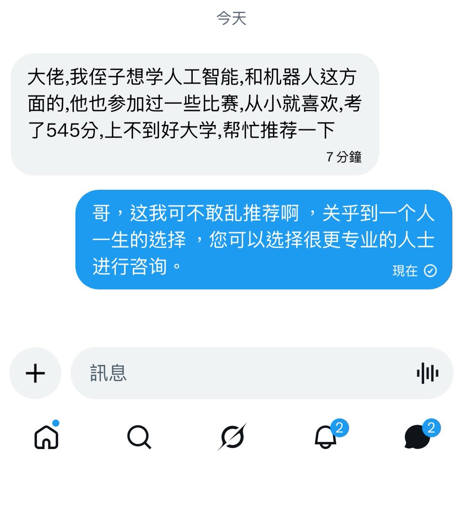

奶昔🥤
@realNyarime
@libapi_ 这能有啥难的，无非就是把他的分数放到1分一段表上面去，然后按照推荐的志愿去填写，如果底气不足的话，勾选服从调剂，剩下的就是看天命，等着被录取吧

libapi
@libapi_
昨天有个 X 上的朋友，高考出分数了，让我给他推荐学校
我哪里敢乱推荐呀，应该要找更专业的人才
可不敢误人子弟啊 ，是个巨大的因果 🙂↔️ https://t.co/MEVqgZ2aDM